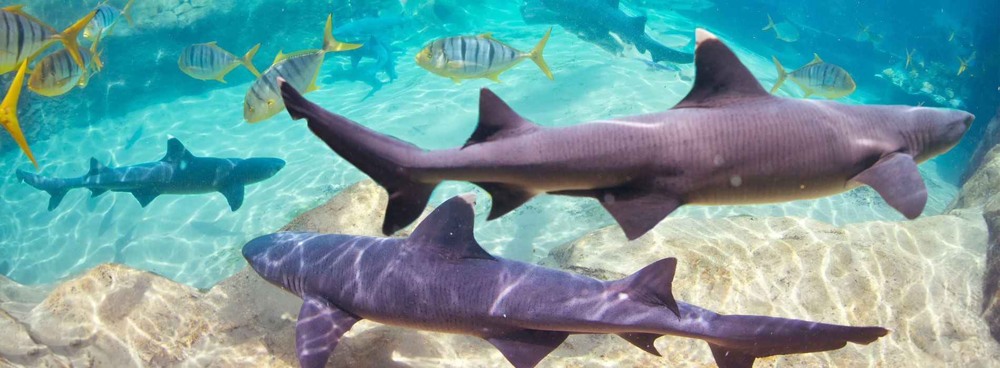
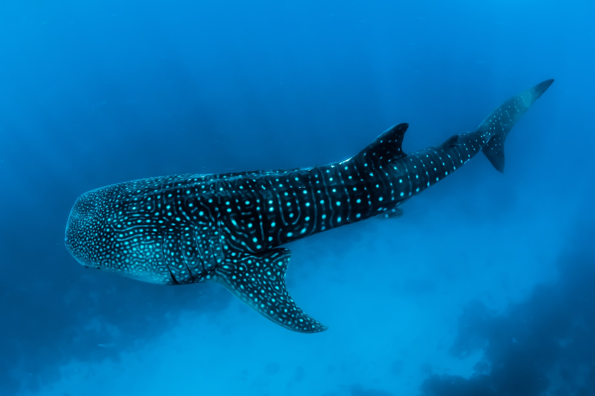

Shark Facts
Sharks are some of the most incredible predators in the world. With their mighty size, their
rocket-like approach to hunting and their undeniably large teeth,
sharks have been the top predator roaming our oceans for millions of years. Yet, they are not the man
killers everyone makes them out to be.
Thanks to movies like 'Jaws' and the human nature to fear what you dont understand, sharks have been victims
to being demonized by the world,
when in fact these creatures are beautiful works of nature. These amazing creatures are facing more and more
grave dangers as the years go on.
A study from
PEWTrusts.org shows that since 1970, shark populations have dropped 70%. It
is up to us to save these predators from extinction so that our oceans
can thrive and so can all life on earth!
Did you know?

- Great white sharks can grow up to 20 feet in length
- Greenland sharks are the oldest sharks known to man, living up to 500 years old.
- Whale sharks are the largest fish in the ocean
- The largest shark in the ocean was the Megladon which is believe to have lived
20
million years ago
and grew 15-18 (about 50-60 ft) meters in length.
- While most sharks are known to be solo creatures, living and hunting on their own, Scalloped
Hammerheads
are often seen living in groups of up to 100 other sharks!
- Sharks have no bones in their body and are made primarly of cartilege.
- Bull sharks are one of the only sharks that can live in both saltwater and fresh water. Bull sharks have
been known to swim through freshwater canals and rivers.
- There are over 1,000 species of sharks in our oceans
- 100
million
sharks are hunted and killed by humans a year. The fishing industry, the increasing market for fin soup
and culling are the major reasonings behind so many sharks being killed. According to the
Florida Museum of Natural History there were a total of 129 shark attacks
on humans worldwide in 2020.
How to Help

Read your labels: Many differnt types of products varying
from
cosmetics, to pet food, to skincare are known to have shark in their ingriedents. The mislabeling of fish in
stores and markets
have also been known to contain shark while trying to sell off as another fish. Squalene, an oil obtained
from shark liver, is a popular shark product.
Stop shark finning: Shark
finning is one of the biggest threats
to sharks today. With the social staus of shark fin soup in some cultures and the high price that comes from
shark fins, sharks are being brutally killed by having their fins cut off and being thrown back into the
ocean to drown (most sharks need to move to breath, and without fins they cant move) and bleed to death on
the ocean floor.
There is no real benefit to eating shark and their fins yet millions die a year in gruesome deaths.
Educate Yourself: Human nature is to fear what you don't understand.
Too many people view sharks as these villian creatures and think the solution is to rid of them to make
people safe. If people took the time
to educate themselves on the nautre and habits of sharks, most people would come to realize they are
amazing, incredible beings who are just living in their world, that we are stepping into. With a better
understanding of creatures other than us, we can work
to learn how to coexist.
Know the risks: The reality is the ocean is the sharks domian and they
are the apex predator in their own world. Humans are not native to the ocean and our ability to survive is
limited when it comes to water.
There will always be a risk when stepping into the ocean of coming across a shark and there will always be a
risk of a shark attack, even if not meant. When you know the risks you will be better educated on how to
handle a situation with a shark but will also be able to make the
decision to not be in the ocean in sharks make you uncomfortable. The ocean is their home, not ours and we
need to learn how to share, not just kick them out.